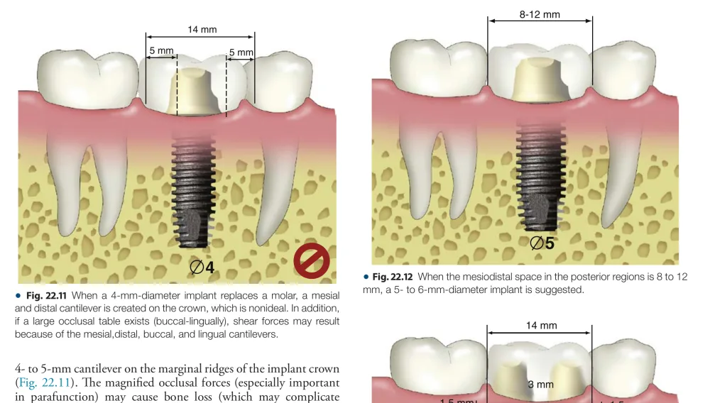
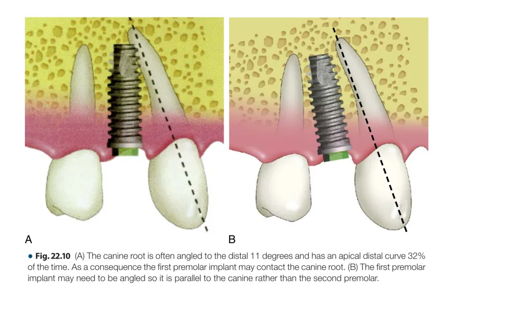

نسخه استخراجشده؛ ترجمه یا تأیید علمی انجام نشده است. وضعیت: captured
بیتعارف: «ایدهآلترین و آسانترین دندان خلفی برای جایگزینی با ایمپلنت، پرمولر اول در قوس ماگزیلا است.»
و دلایلش، که همگی به آناتومی برمیگردند:
یکم — ارتفاع: «استخوان عمودی موجود معمولاً در جایگاههای پرمولر اول بیشتر از هر موقعیت دندان خلفی دیگری است.»
و این را از یونیت ۲٫۳ میشناسی — همانجا دیدی که در ماگزیلای خلفی، پرمولر اول بیشترین ارتفاع را دارد چون کف مقعر سینوس به سمت خلف پایینتر میآید.
دوم — در مندیبل: «در مندیبل، پرمولر اول تقریباً همیشه قدامیتر از فورامن منتال و کمپلکس نوروواسکولار مندیبولار است.»
و یک امتیاز افزوده: «مسیر استخوانی برای قرار دادن ایمپلنت در پرمولر اول مندیبل مساعدتر از هر دندان دیگری در قوس است.»
«از هر دندان دیگری در قوس» — این ادعای بزرگی است. یعنی این جایگاه هم ارتفاع خوب دارد و هم زاویهی خوب.
و اکنون ابعاد که باید بدانی:
• «دندان پرمولر طبیعی ۷ میلیمتر عرض در مندیبل و ۶٫۵ تا ۷ میلیمتر در ماگزیلا دارد.»
• «ریشهی پرمولر معمولاً بهطور میانگین ۴٫۲ میلیمتر قطر دارد در فاصلهی ۲ میلیمتری زیر محل اتصال سمانـمینا (CEJ)، که موقعیت ایدهآل استخوان است.»
حالا این دو عدد را کنار قاعدهی یونیت ۲٫۳ بگذار: عرض طبیعی ۷ میلیمتر، و ایمپلنت ۴ میلیمتری به ۷ میلیمتر فضا نیاز دارد (۱٫۵ + ۴ + ۱٫۵). یعنی جایگاه پرمولر دقیقاً به اندازهی یک ایمپلنت استاندارد جا دارد — نه بیشتر و نه کمتر.
و قطر ریشهی ۴٫۲ میلیمتری هم توضیح میدهد چرا ایمپلنت ۴ میلیمتری در این جایگاه انتخاب طبیعی است.
و نتیجه: «در نتیجه، شایعترین قطر ایمپلنت معمولاً ۴ میلیمتر در کرستمدول است. این همچنین تقریباً ۱٫۵ میلیمتر استخوان روی سطوح پروگزیمال مجاور دندانهای طبیعی فراهم میکند، وقتی فضای مزیوـدیستالی ۷ میلیمتر یا بیشتر باشد.»
و یک قاعدهی جایگزین برای فضای تنگتر: «با این حال، وقتی بُعد مزیوـدیستالی تنها ۶٫۵ میلیمتر است، ایمپلنت ۳٫۵ میلیمتری پیشنهاد میشود.»
پس نیم میلیمتر کمبود فضا، قطر ایمپلنت را نیم میلیمتر پایین میآورد — یک رابطهی مستقیم و ساده که در طراحی به کار میآید.
و اکنون یک تصمیم موقعیتیابی که کمتر گفته میشود ولی نتیجهی پروتزی را تعیین میکند:
نخست مشکل: «جایگذاری ایمپلنت بدون گرافت استخوان ممکن است به یک پروفایل اِمرجنس فرورفته بینجامد، که در گذشته با یک ریجلپ فاسیال روی کراون اصلاح میشد.»
و چرا ریجلپ راهحل خوبی نیست: «کراون با کانتور ریجلپ اجازهی بهداشت درست یا پروب کردن ناحیهی سولکولار فاسیال کراون را نمیدهد و باید بهعنوان آخرین راه به کار رود.»
و راهحل درست، که جراحی است نه پروتزی:
«برای تضمین نتیجهی زیبایی مناسب و اجتناب از نیاز به کراون با ریجلپ، بدنهی ایمپلنت اغلب مشابه یک ایمپلنت قدامی قرار میگیرد — زیر نوک کاسپ باکال (یکسوم باکال، دو سوم لینگوال) بهجای وسط کرست (که زیر فوسای مرکزی است).»
این نکته را با آنچه در یونیت اکلوژن آموختی کنار هم بگذار. آنجا دیدی که تماس اکلوزالی ایدهآل در فوسای مرکزی و درون قطر ایمپلنت است. اینجا میبینی که در پرمولر ماگزیلا، ایمپلنت عمداً از فوسای مرکزی به سمت باکال جابهجا میشود — و این یک مصالحهی آگاهانه میان بیومکانیک و زیبایی است.
پس بدان که چه چیزی را معامله میکنی: جایگذاری باکالی، پروفایل اِمرجنس و بهداشت را نجات میدهد، ولی تماس اکلوزالی را کمی از مرکز ایمپلنت دور میکند. در بیمار با عوامل نیروی بالا، این معامله باید با احتیاط بیشتری انجام شود.
و اکنون دو هشدار که این «آسانترین جایگاه» را مشروط میکنند:
هشدار یکم — زیبایی: «پرمولرهای ماگزیلا اغلب در منطقهی زیبایی بیماران با خط لبخند بالا هستند.»
و این را از یونیت ۲٫۱ میدانی: تقریباً ۵۰ درصد بیماران دندانها را تا پرمولر اول نشان میدهند و ۴۰ درصد تا پرمولر دوم. پس پرمولر یک جایگاه خلفی است که در منطقهی زیبایی قرار دارد — ترکیبی که در جایگاه مولر کمتر پیش میآید، چون تنها حدود ۴ درصد بیماران دندانها را تا مولر اول نشان میدهند.
هشدار دوم — و این عملیترین نکتهی این بخش است:
«نیاز به گرافت استخوان پیش از جایگذاری ایمپلنت پرمولر اول ماگزیلا شایع است، چون فرآیند کشیدن ریشهی باکال نازک اغلب به تحلیل استخوان فاسیال حین یا پس از کشیدن میانجامد.»
یعنی همان جایگاهی که «آسانترین» است، اغلب به گرافت نیاز دارد — و علتش نه آناتومی پایه، بلکه خودِ فرآیند کشیدن است. این نکتهی مهمی است: اگر تو دندان را میکشی و میدانی بعداً ایمپلنت میگذاری، روش کشیدن بخشی از طرح ایمپلنت است.
و یک نکتهی پروتزی: «جایگذاری اندکی باکالی ایمپلنت، پروفایل اِمرجنس سرویکالی کراون پرمولر ماگزیلا را بهبود میبخشد.»
و پرمولر دوم — که داستان متفاوتی دارد:
«اپکسهای ریشهی پرمولر دوم ممکن است روی کانال (یا فورامن) نوروواسکولار مندیبولار یا سینوس ماگزیلا قرار داشته باشند.»
و نتیجهاش: «بنابراین ارتفاع استخوان موجود پرمولر دوم ممکن است کمتر از ناحیهی مولر اول باشد.»
این خلاف انتظار است. معمولاً فکر میکنی هرچه دیستالیتر، ارتفاع کمتر. ولی پرمولر دوم میتواند ارتفاع کمتری از مولر اول داشته باشد — چون اپکس ریشهاش ممکن است درست روی فورامن منتال یا زیر سینوس ماگزیلا قرار گیرد.
و یک عدد آناتومیک: «فورامن اغلب ۲ میلیمتر یا بیشتر بالای کانال نوروواسکولار است.»
و: «این همچنین به ارتفاع کاهشیافتهی استخوان در مقایسه با ناحیهی قدامی فکها میانجامد.»
و پیامدش: «در نتیجه، ایمپلنتی کوتاهتر از ایدهآل، پیامد شایعی در جایگاه پرمولر دوم است.»

این بخش کوتاه است ولی شاید عملیترین هشدار کل یونیت را دارد.
«ریشهی کانین ماگزیلا اغلب ۱۱ درجه به دیستال زاویه دارد و در ۳۲ درصد موارد یک انحنای دیستال نشان میدهد، که ممکن است روی ریشهی کوتاهتر پرمولر اول ماگزیلا امتداد یابد.»
دو عدد را نگه دار: ۱۱ درجه زاویه و ۳۲ درصد انحنا.
و اکنون سناریوی خطا — که دقیقاً توصیف شده:
«جراح ممکن است ناخواسته ایمپلنت را موازی با پرمولر دوم قرار دهد و در نتیجه، داخل ریشهی طبیعی کانین.»
به منطق این خطا دقت کن. جراح کار اشتباهی نمیکند؛ یک مرجع اشتباه انتخاب میکند. موازی کردن با دندان مجاور دیستالی، در بیشتر جایگاهها منطقی است — ولی اینجا نیست، چون ریشهی کانین در همان فضا خم شده است.
و پیامدش: «این ممکن است نهتنها به درمان ریشهی کانین بینجامد، بلکه ممکن است باعث شکستگی ریشه و از دست رفتن دندان شود.»
یعنی یک ایمپلنت پرمولر میتواند به از دست رفتن کانین بینجامد — همان دندانی که در یونیت ۲٫۲ دیدی کلیدیترین موقعیت قوس است و همسایههایش از ضعیفترین دندانهای دهاناند.
و راهکار سهگانه:
یکم — ارزیابی پیش از جراحی: «بنابراین در ناحیهی پرمولر اول ماگزیلا، باید دقت شود که زاویهبندی کانین و محدودیت ارتفاع عمودی ارزیابی شود.»
دوم — تغییر مرجع موازیسازی: «ایمپلنت پرمولر اول ممکن است نیاز داشته باشد موازی با ریشهی کانین قرار گیرد.»
و هزینهاش: «و ممکن است ایمپلنتی کوتاهتر از آنچه ایدهآل دانسته میشود لازم باشد.»
سوم — انتخاب طراحی ایمپلنت: «یک بدنهی ایمپلنت تیپر در یکسوم اپیکال هم ممکن است برای اجتناب از تجاوز به ناحیهی اپیکال کانین سودمند باشد.»
این سه راهکار را با هم ببین — یکی تشخیصی، یکی جراحی، و یکی مربوط به انتخاب محصول. و هر سه از یک واقعیت آناتومیک ساده میآیند: ریشهی کانین جایی است که انتظارش را نداری.
و یک نکتهی طرح درمان در همین بحث که به یونیت ۲٫۲ گره میخورد:
«وقتی کانین بهعنوان تکیهگاه یک پروتز پارسیل ثابت سهواحدی به کار میرود، در خطر افزایشیافتهی شکست ماده یا خارج شدن از سمان است (بهدلیل نیروهای جانبی اعمالشده) و اغلب ترمیمش دشوارتر است.»
پس کانین از دو سو در خطر است: هم وقتی خودش را با پونتیک جایگزین میکنی (یونیت ۲٫۲)، و هم وقتی از آن بهعنوان تکیهگاه استفاده میکنی (اینجا).
و همین، ایمپلنت در جایگاه پرمولر را به یک انتخاب محافظتی تبدیل میکند — نه فقط برای جایگزینی پرمولر، بلکه برای نجات کانین از نقش تکیهگاهی که برایش پرخطر است.
